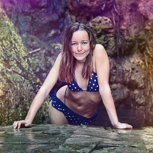

rozpravy s kamarátmi, blúdenie cudzími krajmi a to, ako za mnou
v živote prichádzajú veci samy v správny čas. Tak aj zážitková pedagogika - po tom,
ako som si v nej párkrát omočila kotníčky cítim, že je čas ponoriť sa celá. Prišlo
ku mne České more.
České more je pre mňa spôsob, ako meniť optiku života a možno aj život sám. Rada plachtím na prúdoch českého mora - môže ma uniesť do zátoky túžob, zaviesť na ostrov pochybností, či ma kolísať v lagúne snenia. Rada sa prechádzam po českom mori tam, kde vo vlnách farieb pramení do života tisíc riek a riečok. Rada sa pozerám, ako nad severným obzorom českého mora vychádza slnko, aby osvetlilo svet v jeho krásnej absurdnosti..
Tínka Medalová
Za svoj život som už stratila niekoľko kľúčov, hodinky od babičky, knihu z knižnice, peňaženku v bare, pol rozhovoru z diktafónu, desiatky náušníc, ISIC, andulku, pár svetrov a veľa času hľadaním stratených vecí. Našla som však cenný know-how - ako riešiť problémy bez paniky a ako si obľubovať viac ľudí než veci. Milujem slobodu, hory, bezcieľneČeské more je pre mňa spôsob, ako meniť optiku života a možno aj život sám. Rada plachtím na prúdoch českého mora - môže ma uniesť do zátoky túžob, zaviesť na ostrov pochybností, či ma kolísať v lagúne snenia. Rada sa prechádzam po českom mori tam, kde vo vlnách farieb pramení do života tisíc riek a riečok. Rada sa pozerám, ako nad severným obzorom českého mora vychádza slnko, aby osvetlilo svet v jeho krásnej absurdnosti..